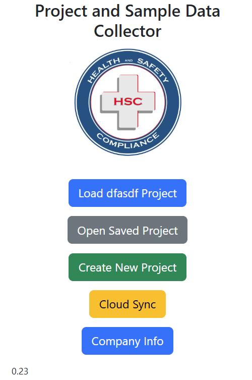
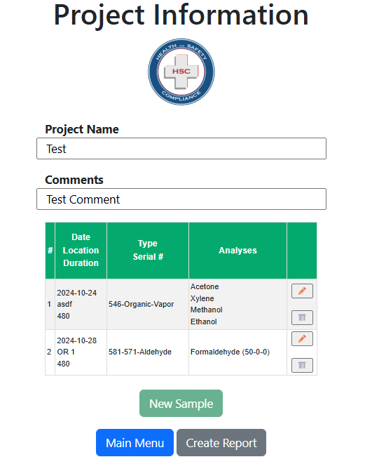
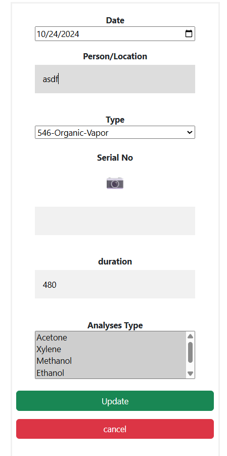

Software Project
HSC Samples
A progressive web app for industrial hygiene professionals — create projects, collect sample data in the field, sync to the cloud, and generate finished PDF reports.
Overview
Project and Sample Data Collector
Industrial hygiene work involves a steady rhythm of going out to a site, taking air or surface samples, labeling them, sending them off to a lab, and eventually reporting the results back to the client. HSC Samples is built to keep all of that organized in one place — on a phone or tablet in the field, on a laptop in the office — without needing a heavy desktop application or a custom backend per company.
The app installs as a PWA so it runs full-screen on iOS or Android, with offline support via a service worker so a brief loss of signal in a basement or industrial space doesn't lose any data. Cloud sync is opt-in: projects can stay local on a device until the user logs in and pushes them up.
Screenshots
The app, on a phone



Features
What it does
Projects
- Create and save a project per site or job
- Open a saved project to pick up where you left off
- Quick-resume of the current in-progress project from the home screen
Samples
- Add samples under each project with the metadata needed for chain of custody
- QR-coded labels for fast scanning when samples come back from the lab
Cloud and Reports
- Optional cloud sync with login, so projects can move between devices
- Generate finished PDF reports straight from the collected data
- Company-info admin for branding the output
Stack
How it's built
HSC Samples is intentionally simple: a static HTML/JavaScript PWA with Bootstrap for layout, a service worker for offline support, and a web manifest for install-to-home-screen behavior. The backend uses Parse (Back4App) for authentication and cloud sync, QR codes are rendered client-side for the labels, and PDF reports are generated client-side from HTML templates.
The app is hosted on GitHub Pages directly from the
repository's main branch,
so deployment is a push.